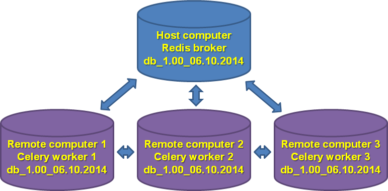

The optimizer module takes considerable amount of time and computer resources to run. To speed it up, the optimizer module uses Celery distributed task queue with Redis backend.
To gain maximum speedup, it is recommended to set up GenomeRunner and identical databases on multiple computers in the same network and configure celery workers to interact with Redis broker on the host computer.

The following installation steps assume:
Check host computer' IP address by running ifconfig command.
$ ifconfig
eth0 Link encap:Ethernet HWaddr 76:21:00:f4:56:c2
inet addr:10.84.XXX.XXX Bcast:10.84.XXX.XXX Mask:255.255.XXX.X
Note the inet addr:10.84.XXX.XXX number. Add this number in celeryconfiguration_optimizer.py file on the host and remote computers:
BROKER_URL = "redis://10.84.XXX.XXX:{}/".format(redis_port) + db_num
Start redis server on the host computer:
nohup redis-server --port 7775 &
nohup will allow redis to run in the background.
Start the optimizer module on the host computer:
python -m grsnp.optimizer -g [org] -d [dir] -w 0
The -w 0 argument prohibits the host computer to run workers locally. If sufficient CPU power is avaliable on the host machine, it is OK to set up -w argument to "1".
Now, start celery worker on a remote machine:
celery worker --app=grsnp.worker_optimizer --data_dir [dir] --loglevel INFO -E -n [workerName] -Q optimizer.group -b redis://10.84.XXX.XXX:7775
At that time, this worker start running optimization jobs. Start workers on other remote machines. The workers now will run different optimization jobs and their results will be assembled by the host computer.
Monitor Celery workers on the host computer via web interface on http://localhost:5555:
celery flower --broker=redis://localhost:7775/
Monitor Celery workers on the host computer via command line:
celery inspect active --broker redis://localhost:7775/0
celery inspect active_queues -b redis://localhost:7775/0
Stop all workers:
ps auxww | grep 'celery worker' | awk '{print $2}' | xargs kill -9